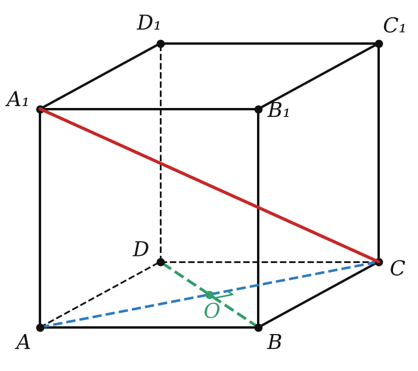

Теория
Вспомним картинку прошлого урока: из точки A к плоскости проведены перпендикуляр AB и наклонная AC, BC — проекция наклонной. Возьмём в плоскости прямую a, проходящую через основание наклонной C. Когда она перпендикулярна наклонной? Ответ поразительно простой: тогда и только тогда, когда она перпендикулярна проекции. А проекцию мы видим прямо в плоскости — и можем проверить «по-плоскому».
Если прямая, лежащая в плоскости, перпендикулярна проекции наклонной к этой плоскости, то она перпендикулярна и самой наклонной. И наоборот: если прямая, лежащая в плоскости, перпендикулярна наклонной, то она перпендикулярна и её проекции.

Прямая теорема. Пусть a ⊂ α, a ⊥ BC. Так как AB ⊥ α, то AB ⊥ a. Значит, a перпендикулярна двум пересекающимся прямым AB и BC плоскости ABC, и по признаку 10.1 a ⊥ (ABC). Наклонная AC лежит в этой плоскости, поэтому a ⊥ AC.
Обратная теорема — так же: a ⊥ AC и a ⊥ AB ⟹ a ⊥ (ABC) ⟹ a ⊥ BC. ∎
Обе теоремы объединяют словами «тогда и только тогда»: прямая плоскости перпендикулярна наклонной тогда и только тогда, когда она перпендикулярна её проекции. Почему «трёх перпендикуляров»: на рисунке три прямых угла — AB ⊥ α, a ⊥ BC, a ⊥ AC. Два из них дают третий.
Теорема работает только для прямой, лежащей в плоскости, и только если AB — именно перпендикуляр к плоскости. Если AB просто «торчит вверх» без доказанной перпендикулярности, применять теорему нельзя.
Главное применение: расстояние от точки до прямой
Как найти расстояние от точки M вне плоскости до прямой этой плоскости? Нужно провести перпендикуляр из M к прямой. Строить его «в пространстве» трудно, а с теоремой — легко: опусти перпендикуляр из основания A на прямую BC в плоскости, получишь точку K. По теореме MK ⊥ BC, и MK — искомое расстояние.
- Найди перпендикуляр MA к плоскости.
- В плоскости опусти перпендикуляр AK на прямую BC.
- Соедини M и K: MK ⊥ BC по теореме о трёх перпендикулярах.
- Посчитай MK из прямоугольного треугольника MAK.
Если точка вне плоскости выпуклого многоугольника равноудалена от прямых, содержащих его стороны, и её проекция лежит внутри многоугольника, то эта проекция — центр вписанной окружности.

Доказательство: опустим из проекции O перпендикуляры ON, OK, OE на стороны. По теореме о трёх перпендикулярах MN, MK, ME — перпендикуляры к сторонам, то есть расстояния. Они равны, катет MO общий, значит, ON = OK = OE: точка O равноудалена от сторон и лежит внутри — это центр вписанной окружности. Отсюда формула: расстояние до сторон d = √(h² + r²), где h = MO, r — радиус вписанной окружности.
Разбор примеров

В треугольнике ABC AB = AC = 17, BC = 16, MA ⊥ (ABC), MA = 8. Найдите расстояние от M до прямой BC.
1) Высота равнобедренного треугольника AK падает в середину BC: AK = √(17² − 8²) = 15.
2) AK — проекция наклонной MK, AK ⊥ BC ⟹ MK ⊥ BC (теорема о трёх перпендикулярах).
3) MK = √(8² + 15²) = 17.
Стороны треугольника равны 13, 14 и 15. Точка M удалена от его плоскости на 3, а её проекция лежит внутри треугольника, причём M равноудалена от прямых, содержащих стороны. Найдите это расстояние.
1) Проекция — центр вписанной окружности (ключевая задача 1). Найдём r = S/p: p = 21, по формуле Герона S = √(21 · 8 · 7 · 6) = 84, r = 4.
2) d = √(3² + 4²) = 5.

Докажите, что диагональ A₁C куба перпендикулярна диагонали грани BD.
A₁A ⊥ (ABC), поэтому AC — проекция наклонной A₁C. Диагонали квадрата перпендикулярны: BD ⊥ AC. Прямая BD лежит в плоскости и перпендикулярна проекции — значит, BD ⊥ A₁C. ∎ (Так же A₁C ⊥ BC₁, и потому A₁C ⊥ плоскости C₁BD.)
Задачи урока
Реши в тетради, к каждой задаче — чертёж. Разберём на занятии.
Тест к уроку
Домашнее задание
Задачи Д1–Д6 ниже, к каждой — рисунок с тремя значками прямого угла. Из учебника: № 12.1, 12.6, 12.10, 12.17. Выучить теорему о трёх перпендикулярах (прямую и обратную) с доказательством.